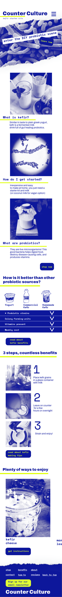

Fall 2022

Counter Culture is a homemade kefir kit company. With the target audience of young adults I aimed to create a brand that is clean and approachable but differentiated from other health and fitness brands. While in relation to kefir “counter culture” means a probiotic bacteria culture that is grown on your counter top, counter culture also refers to people that are against social norms. This term is heavily tied to punk rock music, I let that aesthetic influence my design elements.
